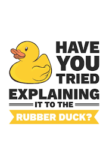

Getting Started with Python in VS Code#
In this tutorial, you will learn how to use Python 3 in Visual Studio Code to create, run, and debug a Python “Roll a dice” application, work with virtual environments, use packages, and more! By using the Python extension, you turn VS Code into a great, lightweight Python editor.
To learn more about the Python language, follow any of the programming tutorials listed on python.org within the context of VS Code.
Prerequisites#
To successfully complete this tutorial, you need to first setup your Python development environment. Specifically, this tutorial requires:
Python 3
VS Code Python extension (For additional details on installing extensions, see Extension Marketplace)
Start VS Code in a workspace folder#
By starting VS Code in a folder, that folder becomes your “workspace”.
Using a command prompt or terminal, create an empty folder called “hello”, navigate into it, and open VS Code (code) in that folder (.) by entering the following commands:
mkdir hello
cd hello
code .
=======
mkdir hello
cd hello
code .
>>>>>>> 6705a020b0958f423ff6ce78f503bc970904e6d0
Note: If you’re using an Anaconda distribution, be sure to use an Anaconda command prompt.
Alternately, you can create a folder through the operating system UI, then use VS Code’s File > Open Folder to open the project folder.
Create a virtual environment#
A best practice among Python developers is to use a project-specific virtual environment. Once you activate that environment, any packages you then install are isolated from other environments, including the global interpreter environment, reducing many complications that can arise from conflicting package versions.
<<<<<<< HEAD
conda create -n <env name> python=3.10
=======
conda create -n <env name> python=3.10
>>>>>>> 6705a020b0958f423ff6ce78f503bc970904e6d0
``
Tip: text inbetween < > should be replaced with your own values. For example, if you want to create an environment called myenv, you would enter conda create -n myenv python=3.10.
Ensure your new environment is selected by using the Python: Select Interpreter command from the Command Palette.

Note: For additional information about virtual environments, or if you run into an error in the environment creation process, see Environments.
Create a Python source code file#
From the File Explorer toolbar, select the New File button on the hello folder:

Name the file hello.py, and VS Code will automatically open it in the editor:

By using the .py file extension, you tell VS Code to interpret this file as a Python program, so that it evaluates the contents with the Python extension and the selected interpreter.
Note: The File Explorer toolbar also allows you to create folders within your workspace to better organize your code. You can use the New folder button to quickly create a folder.
Now that you have a code file in your Workspace, enter the following source code in hello.py:
msg = "Roll a dice"
print(msg)
Addon Intellisense#
When you start typing print, notice how IntelliSense presents auto-completion options.

IntelliSense and auto-completions work for standard Python modules as well as other packages you’ve installed into the environment of the selected Python interpreter. It also provides completions for methods available on object types. For example, because the msg variable contains a string, IntelliSense provides string methods when you type msg.:

Finally, save the file (ctrl + S). At this point, you’re ready to run your first Python file in VS Code.
Run Hello World#
Click the Run Python File in Terminal play button in the top-right side of the editor.

The button opens a terminal panel in which your Python interpreter is automatically activated, then runs python3 hello.py (macOS/Linux) or python hello.py (Windows):

There are three other ways you can run Python code within VS Code:
Right-click anywhere in the editor window and select Run > Python File in Terminal (which saves the file automatically):

Select one or more lines, then press Shift+Enter or right-click and select Run Selection/Line in Python Terminal. This command is convenient for testing just a part of a file.
From the Command Palette (Ctrl + Shift + P), select the Python: Start REPL command to open a REPL terminal for the currently selected Python interpreter. In the REPL, you can then enter and run lines of code one at a time.
How to Debug#
Rubber Duck Debugging#

The rubber duck debugging method is as follows:
Beg, borrow, steal, buy, fabricate or otherwise obtain a rubber duck (bathtub variety).
Place rubber duck on desk and inform it you are just going to go over some code with it, if that’s all right.
Explain to the duck what your code is supposed to do, and then go into detail and explain your code line by line.
At some point you will tell the duck what you are doing next and then realize that that is not in fact what you are actually doing. The duck will sit there serenely, happy in the knowledge that it has helped you on your way.
Note: In a pinch a coworker might be able to substitute for the duck, however, it is often preferred to confide mistakes to the duck instead of your coworker.
Original Credit: ~Andy from lists.ethernal.org
Configure and run the debugger#
Let’s now try debugging our Hello World program.
First, set a breakpoint on line 2 of hello.py by placing the cursor on the print call and pressing F9. Alternately, click in the editor’s left gutter, next to the line numbers. When you set a breakpoint, a red circle appears in the gutter.

Next, to initialize the debugger, press F5. Since this is your first time debugging this file, a configuration menu will open from the Command Palette allowing you to select the type of debug configuration you would like for the opened file.

Note: VS Code uses JSON files for all of its various configurations; launch.json is the standard name for a file containing debugging configurations.
Select Python File, which is the configuration that runs the current file shown in the editor using the currently selected Python interpreter.
Start the debugger by clicking on the down-arrow next to the run button on the editor, and selecting Debug Python File in Terminal.

The debugger will stop at the first line of the file breakpoint. The current line is indicated with a yellow arrow in the left margin. If you examine the Local variables window at this point, you will see now defined msg variable appears in the Local pane.

A debug toolbar appears along the top with the following commands from left to right: continue (F5), step over (F10), step into (F11), step out (Shift + F11), restart (Ctrl + Shift + F5), and stop (Shift + F5).

The Status Bar also changes color (orange in many themes) to indicate that you’re in debug mode. The Python Debug Console also appears automatically in the lower right panel to show the commands being run, along with the program output.
To continue running the program, select the continue command on the debug toolbar (F5). The debugger runs the program to the end.
Tip Debugging information can also be seen by hovering over code, such as variables. In the case of msg, hovering over the variable will display the string Roll a dice! in a box above the variable.
You can also work with variables in the Debug Console (If you don’t see it, select Debug Console in the lower right area of VS Code, or select it from the … menu.) Then try entering the following lines, one by one, at the > prompt at the bottom of the console:
msg
msg.capitalize()
msg.split()

Select the blue Continue button on the toolbar again (or press F5) to run the program to completion. “Roll a dice!” appears in the Python Debug Console if you switch back to it, and VS Code exits debugging mode once the program is complete.
If you restart the debugger, the debugger again stops on the first breakpoint.
To stop running a program before it’s complete, use the red square stop button on the debug toolbar (Shift + F5), or use the Run > Stop debugging menu command.
For full details, see Debugging configurations, which includes notes on how to use a specific Python interpreter for debugging.
Tip: Use Logpoints instead of print statements: Developers often litter source code with print statements to quickly inspect variables without necessarily stepping through each line of code in a debugger. In VS Code, you can instead use Logpoints. A Logpoint is like a breakpoint except that it logs a message to the console and doesn’t stop the program. For more information, see Logpoints in the main VS Code debugging article.
Install and use packages#
Let’s build upon the previous example by using packages.
In Python, packages are how you obtain any number of useful code libraries, typically from PyPI, that provide additional functionality to your program. For this example, you use the numpy package to generate a random number.
Return to the Explorer view (the top-most icon on the left side, which shows files), open hello.py, and paste in the following source code:
import numpy as np
import torch
msg = "Roll a dice"
print(msg)
print(np.random.randint(1,9))
print(torch.randint(1,9))
Tip: If you enter the above code by hand, you may find that auto-completions change the names after the as keywords when you press Enter at the end of a line. To avoid this, type a space, then Enter.
Next, run the file in the debugger using the “Python: Current file” configuration as described in the last section.
You should see the message, “ModuleNotFoundError: No module named ‘numpy’”. This message indicates that the required package isn’t available in your interpreter. If you’re using an Anaconda distribution or have previously installed the numpy package you may not see this message.
You might also see “ModuleNotFoundError: No module named ‘torch’”
To install the numpy package, stop the debugger and use the Command Palette to run Terminal: Create New Terminal (Ctrl + Shift + +). This command opens a command prompt for your selected interpreter.
To install the required packages in your virtual environment, enter the following commands as appropriate for your operating system:
Install the packages
<<<<<<< HEAD
pip install numpy
pip install torch
=======
pip install numpy
pip install torch
>>>>>>> 6705a020b0958f423ff6ce78f503bc970904e6d0
Now, rerun the program, with or without the debugger, to view the output!